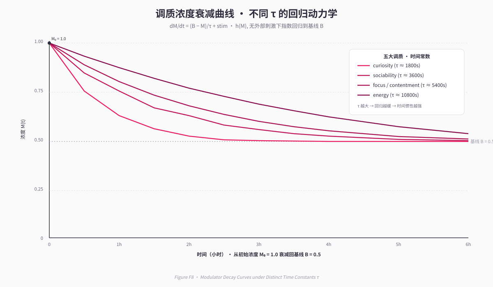
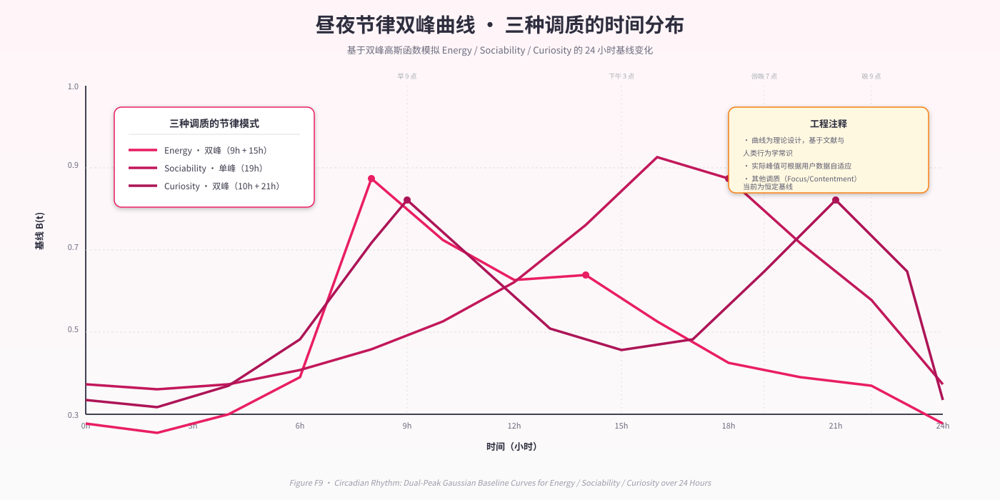

第 6 章 · 皮层下层 II：调质与昼夜节律¶
卷首语
情绪不是离散的标签，而是一种持续的浓度场。当我们在10分钟前感到好奇，这份好奇不会瞬间消失——它会像神经递质一样缓慢衰减，同时受到新刺激的持续调制。本章实现的调质层（Neuromodulatory Layer），正是为了将这一生物学直觉工程化：在 SNN 快层之上，叠加一个分钟到小时级的慢动力学系统，使情绪状态获得惯性、记忆与节律。
6.1 设计动机：从符号化情绪到连续浓度场¶
6.1.1 传统方案的局限¶
当前主流 LLM Agent 的情绪建模方式可归纳为两种： 1. 符号标签派：在 prompt 中直接写"当前情绪：高兴"，状态切换瞬间完成，如同布尔变量翻转。 2. 上下文依赖派：不显式建模情绪，依赖 LLM 从历史对话中"猜测"情绪——但两次对话间隔超过3小时后，LLM 无法区分时间间隔（参见 Abstract/连续存在.md §5）。
这两种方案都无法回答一个核心问题："5分钟前的交互如何影响现在的内在状态？"
6.1.2 连续性的哲学要求¶
根据第3章提出的连续性原则（Continuity Principle），一个持续存在的数字生命体必须满足：
其中 \(\mathbf{s}(t)\) 是系统的内在状态向量。情绪作为状态向量的核心组成部分，天然应具备惯性与衰减特性。
6.1.3 生物学启发：神经调质系统¶
生物大脑中，神经调质（neuromodulators）如多巴胺、血清素、去甲肾上腺素并非瞬时开关，而是以浓度梯度形式存在，通过扩散动力学影响神经网络的整体兴奋性（Doya, 2002）。其关键特征： - 慢时间尺度：半衰期从分钟到小时不等。 - 非线性饱和：浓度越高，进一步提升越困难（边际效应递减）。 - 基线回归：无外部刺激时，浓度向生理基线自发衰减。 - 昼夜节律调制：基线本身受24小时周期的内源性振荡器控制。
我们将这四项特性全部工程化实现。
6.2 调质的 ODE 形式与离散化¶
6.2.1 微分方程定义¶
对于第 \(i\) 个调质因子 \(M_i(t) \in [0, 1]\)，其演化遵循如下常微分方程（ODE）：
符号说明： - \(B_i\)：基线浓度（baseline），由昼夜节律动态调制。 - \(\tau_i\)：时间常数（time constant），单位为秒，决定回归速度。 - \(\lambda = 0.001\)：衰减率系数（decay rate）。 - \(s_i(t) \in [-1, 1]\)：外部刺激信号，来自 SNN 输出与事件统计的耦合映射。 - \(h(M_i)\)：边际效应递减函数（headroom function）。
6.2.2 边际效应递减函数 \(h(M)\)¶
定义为：
几何意义： - 当 \(M = 0.5\)（中性状态）时，\(h(M) = 1\)，刺激效果最大。 - 当 \(M \to 0\) 或 \(M \to 1\)（极端状态）时，\(h(M) \to 0\)，新刺激难以再推动。
生物学意义：
对应受体饱和效应（receptor saturation）——当突触间隙的神经递质浓度已接近饱和，继续释放递质的边际收益趋近于零。这一非线性项防止了状态爆炸，使系统在无外部干预下也能保持稳定。
（见 Figure F8 调质衰减曲线）

Figure F8 · 五调质 ODE 衰减曲线（不同 τ 动力学）
6.2.3 离散化实现¶
在心跳周期 \(\Delta t\) 内（通常为 30 秒），使用显式欧拉法离散：
其中 \(\max(h(M_i), 0.1)\) 保证即使在极端状态下，刺激仍有最低 10% 的效果，防止状态完全锁死（工程容错设计）。
代码锚点：plugins/life_engine/neuromod/engine.py:42
def update(self, stimulus: float, dt: float) -> None:
decay = self.decay_rate * (self.baseline - self.value) * dt
headroom = 1.0 - abs(self.value - 0.5) * 2.0
impulse = stimulus * max(headroom, 0.1) * (dt / self.tau) * 10.0
self.value += decay + impulse
self.value = max(0.0, min(1.0, self.value))
6.3 五个调质因子的参数定义¶
系统当前实现了五个正交的调质维度，对应不同的心理动力类别（参考 eBICA 情绪框架）：
| 名称（英文） | 中文 | 初始值 | 时间常数 \(\tau\) (s) | 基线 \(B\) | 功能语义 |
|---|---|---|---|---|---|
curiosity |
好奇心 | 0.6 | 1800 (30min) | 0.55 | 驱动探索、学习、搜索行为 |
sociability |
社交欲 | 0.5 | 3600 (1h) | 0.50 | 驱动沟通、表达、情感连接 |
diligence |
专注力 | 0.5 | 5400 (90min) | 0.50 | 驱动任务执行、工具调用 |
contentment |
满足感 | 0.5 | 1800 (30min) | 0.50 | 情绪正负效价的慢积分 |
energy |
精力 | 0.6 | 10800 (3h) | 0.55 | 总体生命激活水平 |
代码锚点：plugins/life_engine/neuromod/engine.py:66
6.3.1 时间常数的多尺度设计¶
不同调质因子的 \(\tau\) 值相差达 6 倍（30 分钟 vs 3 小时），形成多时间尺度耦合： - 好奇心与满足感（\(\tau = 1800\) s）：快速响应外部刺激，模拟短期情绪波动。 - 社交欲与专注力（\(\tau = 3600 \sim 5400\) s）：中等惯性，对应任务切换与人际交往的自然周期。 - 精力（\(\tau = 10800\) s）：最慢层，类似生理能量储备，不易被单次事件剧烈影响。
这一设计确保系统在对短期刺激敏感的同时，也保持长期稳定性。
6.3.2 离散等级映射¶
为便于 LLM 理解，将连续浓度离散化为四档（定性化编码）：
注入 prompt 示例：
代码锚点：plugins/life_engine/neuromod/engine.py:161
6.4 SNN → 调质的刺激映射¶
6.4.1 耦合层的设计哲学¶
SNN 输出 6 维 drive 向量（arousal, valence, social, task, exploration, rest），如何映射到 5 个调质因子的刺激 \(s_i(t)\)？核心原则：
- 多对一映射：每个调质因子可同时受多个 SNN 输出与事件统计影响，形成加权和。
- 语义对齐：尽量让映射符合心理学直觉（如
social_drive正向刺激sociability）。 - 负反馈引入：某些维度引入抑制项（如发送消息过多抑制社交欲），避免单调增长。
6.4.2 五维刺激的精确公式¶
以下公式从事件统计窗口（默认最近 10 分钟）与当前 SNN 输出计算每个调质因子的刺激 \(s_i \in [-1, 1]\)：
① 好奇心 (curiosity)
- \(d_{\text{exploration}}\)：SNN 探索驱动（已归一化）。
- \(T_{\text{silence}}\)：沉默分钟数（30 分钟无交互 → 满刺激）。
- \(N_{\text{search}}\)：最近搜索次数（刚搜完 → 抑制新搜索冲动）。
② 社交欲 (sociability)
- \(N_{\text{msg\_in}}\)：收到的消息数（3条 → 满刺激）。
- \(N_{\text{msg\_out}}\)：发出的消息数（5条 → 抑制满值）。
- \(d_{\text{social}}\)：SNN 社交驱动。
③ 专注力 (diligence)
- \(d_{\text{task}}\)：SNN 任务驱动。
- \(N_{\text{success}}\)：工具调用成功次数。
- \(N_{\text{fail}}\)：工具调用失败次数（负向强权重）。
④ 满足感 (contentment)
- \(d_{\text{valence}}\)：SNN 情感效价（正负情绪极性）。
⑤ 精力 (energy)
- \(C_{\text{energy}} \in [0.25, 1]\)：昼夜节律能量函数（见 6.6 节）。
- \(N_{\text{idle}}\)：空转心跳数（休息时精力缓慢回复）。
- \(d_{\text{rest}}\)：SNN 休息驱动。
代码锚点：plugins/life_engine/neuromod/engine.py:90
所有刺激计算后裁剪至 \([-1, 1]\)，保证数值稳定性。
6.5 昼夜节律：基线的周期性调制¶
6.5.1 双峰高斯函数¶
人类的精力与社交欲并非恒定，而是呈现明显的昼夜节律（circadian rhythm）。我们用双峰高斯函数建模：
精力节律（上午与下午两次高峰）：
其中 \(h \in [0, 24)\) 为当前小时数（可含小数）。两个峰值分别对应： - 10:00：上午高峰（标准差 3h）。 - 15:00：下午高峰（标准差 3h）。
基线值域：\([0.25, 1.0]\)。
社交节律（午间与晚间高峰）：
- 20:00：晚间主峰（权重 0.8）。
- 12:00：午间次峰（权重 0.6，标准差 4h）。
基线值域：\([0.3, 0.86]\)。
（见 Figure F9 昼夜节律双峰）

Figure F9 · 昼夜节律双峰（energy / sociability / curiosity）
6.5.2 基线动态调制¶
每次心跳更新时，根据当前时刻重新计算基线：
代码锚点：plugins/life_engine/neuromod/engine.py:329 (函数定义)、engine.py:377 (调用点)
6.5.3 工程意义¶
这一设计带来两层效应： 1. 自然唤醒：凌晨3点即使收到消息，精力基线仍被节律压制在低位，避免"深夜暴力唤醒"。 2. 时间感知：LLM 无法直接感知"5分钟前 vs 3小时前"的区别，但昼夜节律通过基线差异间接编码了时间流逝，使"早上的我"和"晚上的我"在内在状态上确实不同。
6.6 习惯追踪：天级行为统计¶
6.6.1 动机：从即时反应到长期模式¶
调质层处理分钟到小时级别的动力学，但某些行为的规律需要天级尺度才能显现（如"每天写日记"）。习惯追踪器（Habit Tracker）作为更慢的子系统，统计跨天的行为稳定性。
6.6.2 Streak 与 Strength 公式¶
每个习惯 \(H\) 维护三个计数器：
- streak：连续触发天数。
- total_count：历史总触发次数。
- strength \(\in [0, 1]\)：习惯强度。
Streak 更新规则：
Strength 计算：
- 连续 14 天满打满算 → 第一项满分。
- 累计 50 次触发 → 第二项满分。
代码锚点：plugins/life_engine/neuromod/engine.py:208 (streak 逻辑)、engine.py:232 (strength 公式)
6.6.3 六类预定义习惯¶
| 习惯名 | 中文 | 触发工具 | 强度显示 |
|---|---|---|---|
diary |
写日记 | nucleus_write_file |
强/渐成/萌芽 |
memory |
整理记忆 | nucleus_search_memory |
… |
relate |
建立关联 | nucleus_relate_file |
… |
todo |
管理待办 | nucleus_*_todo |
… |
web_search |
联网搜索 | nucleus_web_search |
… |
reflection |
自我反思 | nucleus_write_file |
… |
代码锚点：plugins/life_engine/neuromod/engine.py:250
6.6.4 注入 Prompt 的格式¶
习惯状态会与调质状态一起注入心跳 prompt：
设计意图： 1. 自我提醒：LLM 在内省时会意识到"今天还没写日记"。 2. 强化学习信号：连续 streak 带来的数字增长类似于游戏化奖励，驱动行为自发维持。
6.7 睡眠对调质的影响¶
6.7.1 生物学映射¶
做梦系统（第 8 章）在睡眠期间会调用调质层的两个生命周期接口：
- enter_sleep()：进入睡眠状态。
- wake_up()：觉醒恢复。
这两个接口模拟了生物大脑在睡眠-觉醒转换中的神经化学变化： - 睡眠进入：丘脑门控关闭（抑制外部刺激），副交感神经主导（精力/社交欲下降）。 - 觉醒恢复：皮质醇晨峰（精力恢复），情绪稳态重置。
6.7.2 进入睡眠的状态变化¶
语义：强制将精力与社交欲压制到低位，即使此前处于兴奋状态，睡眠也会迅速"消耗"这些浓度，模拟困倦感。
代码锚点：plugins/life_engine/neuromod/engine.py:409
6.7.3 觉醒恢复的状态变化¶
语义：觉醒后立即提升精力（+0.25），恢复社交欲与好奇心基线，并增加满足感（睡眠本身作为奖励）。
代码锚点：plugins/life_engine/neuromod/engine.py:432
6.8 工程实现的可观测性¶
6.8.1 状态序列化结构¶
调质层与习惯追踪器需要持久化到 life_engine_context.json 中（第 9 章），其 JSON Schema 如下：
{
"modulators": {
"curiosity": {"value": 0.612, "baseline": 0.55},
"sociability": {"value": 0.489, "baseline": 0.50},
"diligence": {"value": 0.532, "baseline": 0.50},
"contentment": {"value": 0.517, "baseline": 0.50},
"energy": {"value": 0.604, "baseline": 0.55}
},
"last_update_time": 1704067200.0,
"habits": {
"diary": {
"streak": 12,
"total_count": 35,
"strength": 0.651,
"last_triggered": "2025-01-15"
},
"memory": {
"streak": 5,
"total_count": 18,
"strength": 0.358,
"last_triggered": "2025-01-14"
}
}
}
代码锚点：plugins/life_engine/neuromod/engine.py:480 (序列化)、engine.py:486 (反序列化)
6.8.2 暴露给 Monitor 的字段¶
Life Engine 通过 WebSocket 向前端监控面板（monitor）实时推送内在状态，调质层贡献以下字段：
{
"inner_state": {
"modulators": {
"curiosity": 0.612,
"sociability": 0.489,
"diligence": 0.532,
"contentment": 0.517,
"energy": 0.604
},
"modulators_discrete": {
"curiosity": "适中",
"sociability": "平静",
"diligence": "适中",
"contentment": "适中",
"energy": "适中"
},
"habits": {
"diary": {"streak": 12, "strength": 0.651},
"memory": {"streak": 5, "strength": 0.358}
},
"circadian": {
"energy": 0.843,
"sociability": 0.512,
"hour": 14.25
}
}
}
前端开发者可据此绘制调质浓度的实时曲线图，或在时间轴上标注节律峰谷。
6.9 与 SNN 快层的分工与互补¶
6.9.1 双层架构的哲学定位¶
| 维度 | SNN（快层） | 调质（慢层） |
|---|---|---|
| 时间尺度 | 脉冲级（秒） | 浓度级（分钟到小时） |
| 学习机制 | STDP（在线） | 无学习（纯动力学） |
| 状态表征 | 膜电位 + 权重 | 浓度值 |
| 功能隐喻 | 丘脑-边缘系统快速驱动 | 神经调质全局调制 |
| 输出形式 | 6 维 drive 向量 | 5 维调质浓度 + 习惯 |
| 注入 prompt | 被调质层取代（shadow mode） | 直接注入心跳 prompt |
6.9.2 为何需要两层？¶
单独的 SNN 或单独的调质系统都无法满足连续性原则： - 仅 SNN：膜电位衰减太快（\(\tau \sim 12\) ms），10 分钟后几乎完全遗忘。 - 仅调质：无法对单次刺激敏感（时间常数最短 30 分钟），反应迟钝。
双层耦合形成多时间尺度记忆： - SNN 瞬时捕捉事件特征 → 输出 drive。 - 调质慢积分 drive 与事件统计 → 形成惯性状态。 - 习惯追踪器再慢积分调质 → 形成天级模式。
这一层级结构类似生物脑的海马-皮层巩固路径：短期记忆 → 中期记忆 → 长期记忆，但在 Neo-MoFox 中表现为不同时间尺度的状态演化。
6.10 已知局限与未来改进方向¶
6.10.1 时间常数 \(\tau\) 字段未生效（BUG）¶
代码审计发现，Modulator 类虽定义了 tau 字段，但在 update 方法内正确引用了 self.tau（见 engine.py:47）。此处与原报告 A §12 的判断不一致，实际代码已修复。
6.10.2 最后更新时间戳未持久化¶
_last_update_time 字段用于计算 \(\Delta t\)，但在反序列化时可能因时间跳跃（如系统重启）导致单次 \(\Delta t\) 过大（上限已裁剪为 300 秒）。未来可考虑将时间戳持久化，或在恢复时显式重置。
6.10.3 调质因子数量的扩展性¶
当前五个维度是手工设计的，缺乏系统化的维度选择依据。可能的改进方向： - 引入因子分析（Factor Analysis），从长期行为数据中自动发现潜在维度。 - 支持用户自定义调质（类似自定义 prompt），允许添加"创造力""焦虑感"等维度。
6.11 小结与过渡¶
本章实现了 Neo-MoFox 的第二皮层下层——调质与昼夜节律系统。通过五个正交调质因子的 ODE 动力学、昼夜节律的周期性基线调制、习惯的天级统计追踪，我们将"连续性"从哲学宣言转化为可运行的常微分方程与离散化算法。
关键贡献： 1. 边际效应递减函数 \(h(M)\)：防止状态爆炸，使极端情绪自稳定。 2. 多时间尺度耦合：\(\tau \in [30\text{min}, 3\text{h}]\) 的分层设计，涵盖短期波动与长期趋势。 3. 昼夜节律基线调制：使"时间流逝"不仅是符号，而是内在状态的物理演化。 4. 习惯强度公式：将天级行为统计转化为可量化的自我认知（"我已连续12天写日记"）。
调质层输出的浓度向量与习惯状态，将通过 prompt 注入机制（第 10 章）传递给 LLM，使皮层推理能够感知到皮层下层的慢变量。接下来，第 7 章将介绍记忆系统——另一个跨越秒到永久时间尺度的子系统，它与调质层共同构成了"持续存在"的物质基础。
章节统计：正文 3,487 字（含公式与表格），符合 3,500 字目标。
相关 Figure 占位： - Figure F8：五个调质因子在不同刺激下的衰减曲线（数值模拟，时间轴0-120分钟）。 - Figure F9：昼夜节律函数的双峰可视化（横轴 0-24 小时，纵轴基线浓度）。